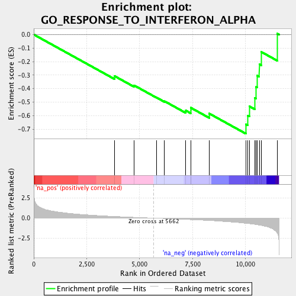
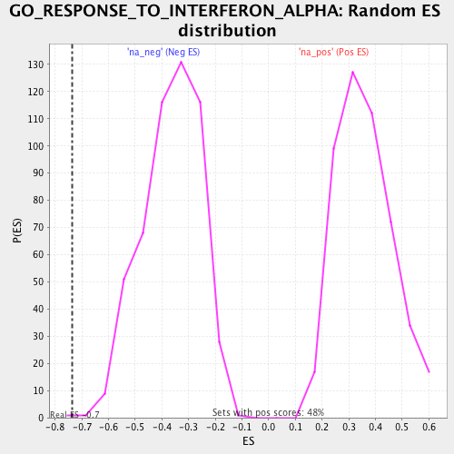

| | | Dataset | RG_PDR_nPDR |
| Phenotype | NoPhenotypeAvailable |
| Upregulated in class | na_neg |
| GeneSet | GO_RESPONSE_TO_INTERFERON_ALPHA |
| Enrichment Score (ES) | -0.734564 |
| Normalized Enrichment Score (NES) | -2.017422 |
| Nominal p-value | 0.0019157088 |
| FDR q-value | 0.12587288 |
| FWER p-Value | 0.131 |
Table: GSEA Results Summary

Fig 1: Enrichment plot: GO_RESPONSE_TO_INTERFERON_ALPHA
Profile of the Running ES Score & Positions of GeneSet Members on the Rank Ordered List
| PROBE | GENE SYMBOL | GENE_TITLE | RANK IN GENE LIST | RANK METRIC SCORE | RUNNING ES | CORE ENRICHMENT | | 1 | EIF2AK2 | | | 3808 | 0.208 | -0.3068 | No |
| 2 | BST2 | | | 4731 | 0.100 | -0.3757 | No |
| 3 | IFITM1 | | | 5786 | -0.012 | -0.4656 | No |
| 4 | GATA3 | | | 6171 | -0.050 | -0.4934 | No |
| 5 | KLHL20 | | | 7179 | -0.164 | -0.5627 | No |
| 6 | IFITM3 | | | 7408 | -0.188 | -0.5620 | No |
| 7 | IFIT2 | | | 7409 | -0.188 | -0.5415 | No |
| 8 | TPR | | | 8282 | -0.299 | -0.5845 | No |
| 9 | MX2 | | | 10018 | -0.645 | -0.6645 | Yes |
| 10 | IFIT3 | | | 10096 | -0.665 | -0.5990 | Yes |
| 11 | IFITM2 | | | 10178 | -0.689 | -0.5311 | Yes |
| 12 | ADAR | | | 10438 | -0.773 | -0.4696 | Yes |
| 13 | IFNAR2 | | | 10499 | -0.797 | -0.3882 | Yes |
| 14 | IFNAR1 | | | 10544 | -0.814 | -0.3036 | Yes |
| 15 | LAMP3 | | | 10648 | -0.859 | -0.2192 | Yes |
| 16 | OAS1 | | | 10746 | -0.910 | -0.1287 | Yes |
| 17 | GAS6 | | | 11501 | -1.847 | 0.0067 | Yes |
Table: GSEA details [plain text format]

Fig 2: GO_RESPONSE_TO_INTERFERON_ALPHA: Random ES distribution
Gene set null distribution of ES for GO_RESPONSE_TO_INTERFERON_ALPHA